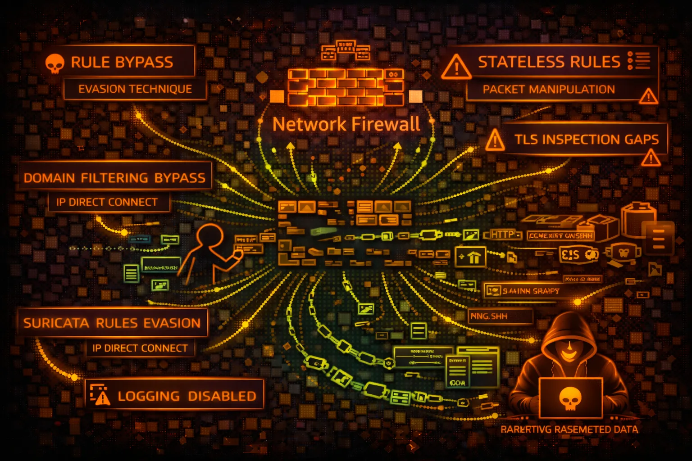

AWS Network Firewall Security
NETWORK
AWS Network Firewall provides stateful inspection, IDS/IPS, and domain filtering for VPCs. Security risks include rule bypass, logging gaps, and TLS inspection evasion.

AWS Network Firewall provides stateful inspection, IDS/IPS, and domain filtering for VPCs. Security risks include rule bypass, logging gaps, and TLS inspection evasion.
Stateless rules evaluate packets individually. Stateful rules track connection state. Suricata-compatible rules enable IDS/IPS signatures. Domain lists filter HTTP/TLS traffic.
Policies combine rule groups with ordering. Default actions define what happens to non-matching traffic. Strict order vs action order affects rule evaluation.
Network Firewall is a defensive control, so risk is about bypassing it. Misconfigured rules, logging gaps, and TLS inspection limitations create opportunities for attackers to evade detection.
aws network-firewall list-firewallsaws network-firewall describe-firewall \\
--firewall-name FIREWALL_NAMEaws network-firewall list-rule-groupsaws network-firewall describe-rule-group \\
--rule-group-name GROUP_NAME \\
--type STATEFULaws network-firewall describe-firewall-policy \\
--firewall-policy-name POLICY_NAMEaws network-firewall describe-rule-group \\
--rule-group-arn RULE_GROUP_ARN \\
--query 'RuleGroup.RulesSource'aws network-firewall describe-rule-group \\
--rule-group-arn ARN \\
--query 'RuleGroup.RulesSource.RulesSourceList'aws network-firewall describe-logging-configuration \\
--firewall-arn FIREWALL_ARNaws network-firewall update-rule-group \\
--rule-group-arn ARN \\
--rules 'pass ip any any -> any any (sid:1;)'aws network-firewall update-rule-group \\
--rule-group-arn ARN \\
--rules-source-list Targets=[".attacker.com"],
TargetTypes=["HTTP_HOST","TLS_SNI"],
GeneratedRulesType=ALLOWLISTaws network-firewall update-logging-configuration \\
--firewall-arn ARN \\
--logging-configuration '{"LogDestinationConfigs":[]}'{
"Effect": "Allow",
"Action": "network-firewall:*",
"Resource": "*"
}Full access - can modify rules, disable logging, bypass firewall
{
"Effect": "Allow",
"Action": [
"network-firewall:Describe*",
"network-firewall:List*"
],
"Resource": "*"
}Only describe and list - no modification capability
{
"Effect": "Allow",
"Action": [
"network-firewall:UpdateRuleGroup",
"network-firewall:CreateRuleGroup"
],
"Resource": "*"
}Can create/modify rules - bypass firewall protection
{
"Effect": "Deny",
"Action": [
"network-firewall:Update*",
"network-firewall:Delete*",
"network-firewall:Create*"
],
"Resource": "*",
"Condition": {
"StringNotEquals": {"aws:PrincipalTag/team": "network-security"}
}
}Only network security team can modify firewall
Set default action to drop/alert for unmatched traffic. Explicit allow only.
Enable logging for all rule actions - ALERT, DROP, and PASS.
LogDestinationConfigs for S3/CloudWatch/KinesisEnable TLS inspection for HTTPS traffic visibility where compliance allows.
Use SCP to prevent rule changes except by security team.
Alert on UpdateRuleGroup, UpdateFirewallPolicy CloudTrail events.
Audit rules periodically for overly broad allows and stale rules.